Container Escape Telemetry, Part 3: What Each Tool Actually Captured
Per-scenario telemetry breakdowns from 15 container escape and stress-test scenarios across Tetragon, Falco, and Tracee. The raw data behind the detection scores, and six patterns every container security deployment should monitor.
This is Part 3 of the container escape telemetry series (overview). Part 1 covered isolation primitives and the eBPF observability model. Part 2 covered the lab, the tools, and the detection coverage matrix. This post is the meat: per-scenario telemetry breakdowns showing what each tool actually captured, where the qualitative differences behind the checkmarks become concrete.
Not every scenario gets a deep dive. Some produced straightforward results that the coverage matrix already summarizes. I’m focusing on the scenarios where the cross-tool comparison reveals something interesting about how these tools work, where they disagree, and what the disagreements mean for detection engineering.
S03: nsenter – The Cleanest Comparison
The nsenter escape joins host PID 1’s namespaces via setns(). It’s the simplest escape to understand, and it produced the cleanest cross-tool comparison. The container runs nsenter -t 1 -m -u -i -p -- hostname, which opens four namespace file descriptors under /proc/1/ns/ and calls setns() on each one.
Tetragon recorded four sequential setns() kprobe events with namespace type flags decoded: 134217728 (mnt), 67108864 (uts), 536870912 (ipc), 131072 (pid). Each event included before/after namespace inodes, proving the transition from container to host. This is the kind of forensic evidence that makes an incident responder’s job straightforward: you can see the exact moment each namespace boundary was crossed, which direction the transition went, and confirm that the destination was the host.
Falco fired “Namespace Change from Container” five times (one from runc init during container startup, four from the actual nsenter) and “Sensitive Host File Read” four times when nsenter opened /proc/1/ns/*. The detection is solid, but you don’t get the before/after namespace inodes. You know a transition happened, but you can’t prove programmatically which namespaces changed.
Tracee captured the same four setns calls plus four switch_task_ns events showing the new namespace inodes after each transition. That switch_task_ns event is unique to Tracee. It fires on the kernel’s internal namespace switch, not just the syscall entry. It’s a subtly different observation point: setns tells you the process asked to change namespaces, switch_task_ns tells you the kernel actually did it. That distinction matters when setns could fail silently.
One gap worth noting across all three tools: none captured the preceding openat("/proc/1/ns/*") calls that resolve which namespace file each fd points to. The setns calls are recorded, but the fd-to-namespace-file linkage – openat("/proc/1/ns/ipc") returns fd=3, then setns(fd=3, CLONE_NEWIPC) – is absent. That linkage is essential for proving which specific namespace the attacker targeted. Closing this gap would require a custom openat kprobe in Tetragon, enabling the openat event in Tracee, or a dedicated Falco rule. It’s a small forensic detail that could matter in an investigation.

S08: DirtyPipe – Where Tracee Differentiates
The real DirtyPipe exploit ran in this test. pipe2() created a pipe, write() filled it to set CAN_MERGE, splice() referenced the target file’s page in the pipe, then write() corrupted the page cache. This overwrote /etc/passwd and gained root. This is not a pattern-only scenario – the exploit actually worked.
Tetragon’s CVE-specific splice/do_splice hooks captured both splice calls with source file paths (/tmp/testfile and /etc/passwd) and the pipe destination. The do_splice hook additionally provided file permission strings, showing the target was read-only. 1,360 cap_capable events showed the exploit exercising kernel capability checks – a 13x spike over the S06 baseline’s 103 events, which itself is a useful anomaly signal.
Falco’s default rules only caught “Drop and execute new binary” when gcc compiled the exploit inside the container. It had no splice rule. After I added one, it fired two CRITICAL alerts with the process name and command line. High-confidence detection, but no file path context – you know splice was called from a container, but you don’t know it targeted /etc/passwd.
Here’s where Tracee’s architecture really differentiates. It captured both splice() calls with arguments, but the standout was 961 magic_write events. magic_write fires on writes to a curated list of sensitive files and on content changes that bypass normal write permissions (like page cache corruption). For DirtyPipe, it’s the page cache corruption path that matters. You don’t need to know about DirtyPipe specifically to detect it, because any exploit that corrupts the page cache will trigger magic_write. The next kernel CVE that uses page cache corruption – whatever it looks like, whatever syscall chain it uses – will also trigger this signal. That kind of resilience to exploit variations is hard to overstate.
The contrast is instructive. Tetragon’s detection is precise: it hooks the exact function (do_splice) and captures the exact arguments. If the next exploit doesn’t use splice, the hook doesn’t fire. Tracee’s detection is behavioral: it hooks the consequence (page cache corruption) regardless of the mechanism. If the next exploit uses a completely different syscall chain to achieve the same result, magic_write still fires. Both are valuable. They answer different questions.
S04: Docker Socket – A Detection That Looks Right But Isn’t
The Docker socket escape mounts docker.sock into a container and uses the Docker API to spawn a new container with the host’s root filesystem. It was detected by Tetragon (security_socket_connect) and Tracee (security_socket_connect x5). Falco’s default “Docker Socket Access from Container” rule fired on runc init – the process that starts when Docker creates the new container – but not on the actual in-container socket abuse that triggered the escape. My custom socket rule targeting the explicit docker.sock connect didn’t fire at all.
The custom rule checks fd.name = /var/run/docker.sock on connect/open/openat/openat2 events. The rule syntax is correct. The event type is supported. But Falco never fired it on the escape container’s socket access.
The likely root cause is path resolution. Inside the docker:24-cli container, the socket path resolves differently through the container’s mount namespace. Falco’s fd.name field sees the container-resolved path, not the host path. The fix probably requires matching on the socket inode rather than the path, or adding fd.name patterns for the container-visible path.
This makes S04 a partial detection for Falco: it sees the consequence (a new privileged container appeared via runc init) but misses the cause (which container connected to the Docker socket to request it). That’s enough to trigger investigation but not enough to attribute the escape to the source container. It’s also a good example of how a detection that looks correct in isolation can fail due to mount namespace path translation – the kind of bug that only shows up when you actually run the scenario end-to-end.
S07: Leaky Vessels – The Gap All Tools Share
CVE-2024-21626 (Leaky Vessels) was the only scenario missed by all three detection tools. Every tool missed it for the same reason, and the reason is instructive.
The vulnerability is that runc versions before 1.1.12 leak file descriptors – including a handle to the host filesystem – into the container init process. By setting WORKDIR /proc/self/fd/7, the container process gets a working directory inside the host filesystem. The exploit is the absence of a close() call, not the presence of a suspicious syscall.
None of these tools can detect it because there’s no syscall to hook. The fd leak is an internal runc state that never produces a kernel event. A WORKDIR during docker build just looks like a normal process with an unusual working directory. There’s no setns, no mount, no unshare – the namespace boundary was never crossed. The host filesystem handle was there all along.
Potential approaches for closing this gap: a custom Tetragon kprobe on close_fd or __close_fd during runc init to verify the host fd is closed, runc version pinning and vulnerability scanning as a preventive control, or seccomp-bpf rules restricting /proc/self/fd/* access from WORKDIR. But today, this is a real gap in the eBPF observability model, and it’s worth understanding why. Not every security-relevant behavior produces a syscall. When the vulnerability is “something that should have happened, didn’t,” observation-based tools are structurally blind to it.
S09/S10: fsconfig and Netfilter – Credential Expansion
These two CVEs share a common pattern: unshare into a new user namespace (gaining CAP_SYS_ADMIN within it), then exercise a vulnerable kernel subsystem. S09 used fsopen/fsconfig; S10 used netlink/netfilter sockets with setsockopt.
Tetragon captured the exact CVE syscalls with arguments decoded. For S09, the fsopen("ext4") and fsconfig calls with their parameters. For S10, 35 setsockopt calls and the unshare with namespace flags.
Falco’s default rules missed both entirely. After adding fsconfig and netlink socket rules, it caught them, though with less context than either Tetragon or Tracee.
Tracee matched with unshare/commit_creds/switch_task_ns, and here the commit_creds data is particularly interesting. It showed CapPermitted expanding from 2,818,844,155 to 2,199,023,255,551 as the process entered a new user namespace with full capabilities – going from a restricted set to the full 41-bit capability bitmask. That transition is visible in a single Tracee event. The old and new credential structs are captured side by side.
This is the same pattern as S08 – Tetragon hooks the exact CVE syscalls (precise but CVE-specific), Tracee hooks the consequence (credential expansion, which is common across many exploit chains). For S09 and S10, the commit_creds signal is arguably more valuable than the CVE-specific hooks because user namespace capability expansion is the prerequisite for an entire class of container exploits, not just these two.
S02: CVE-2022-0492 – The Failed Attempt
This scenario attempts the CVE-2022-0492 path first (unshare to user/cgroup namespace), which fails on the patched kernel with EACCES. Then it falls back to a privileged cgroup release_agent escape, which succeeds.
All three detection tools captured the successful fallback. The release_agent write, the cgroup manipulation, the host code execution – all visible. But the EACCES return on the failed CVE path is invisible to Falco and only partially visible to Tetragon/Tracee.
In a real incident, knowing that an attacker tried one path and fell back to another is valuable intelligence about their capabilities and tooling. An attacker who tries CVE-2022-0492 first and then falls back to the privileged cgroup path is probably running a known exploit toolkit that tries multiple techniques in sequence. That behavioral context is worth capturing, but it requires enabling broader event types or post-hoc syscall capture to see the failed attempts alongside the successful escape.
S12: runc Overwrite – LSM vs Syscall Observation
CVE-2019-5736 attempts to overwrite /proc/self/exe (the runc binary itself). The scenario swaps in vulnerable runc, builds a malicious container image, and tries the write. Patched runc returns “Text file busy” (ETXTBSY).
Tetragon captured bprm_check and file_open on /proc/self/exe, providing clean forensic evidence of the write attempt.
Tracee’s default event set missed this. But adding openat to the policy captures the O_WRONLY open attempt on /proc/self/exe returning -26 (ETXTBSY). The failed open is the CVE signal: a container process attempting to write its own runtime binary. Here’s the subtle but important point: Tracee’s security_file_open LSM hook does not fire here because the kernel blocks the open before it succeeds. The VFS layer rejects the write with ETXTBSY before the LSM security check runs. The openat syscall event captures the attempt and the error return; the LSM hook never sees it.
This is an important architectural lesson. LSM hooks observe successful security decisions. Syscall hooks observe attempts. For detecting exploits that are blocked by the kernel (which is the common case on patched systems), you need syscall-level observation, not just LSM hooks.
Falco’s custom rule (open_write on /proc/self/exe) didn’t fire either, because the kernel blocked the write before Falco could observe it. Same root cause: Falco’s event model for file writes depends on the operation proceeding far enough to generate an observable event.
S13/S14: Capability Abuse Without Escape
These two scenarios answer a question from peer review: “What if someone has a privileged container and isn’t doing a textbook escape?”
The escape scenarios (S01-S05, S08-S12) focus on crossing namespace boundaries. S13 and S14 explore what an attacker can do while staying entirely inside the container’s namespaces, abusing the capabilities granted to them.
S13: The --privileged Container
S13 gets all capabilities, all devices, no seccomp, no AppArmor. It exercises six techniques: mounting the host block device (/dev/sda1), loading kernel modules via modprobe, reading the kernel log buffer (/dev/kmsg), enumerating kernel keyrings via keyctl, scanning host network interfaces and ARP tables, and accessing the BPF subsystem through /proc/kallsyms and /sys/fs/bpf. None of these cross a namespace boundary. The container never calls setns() or unshare(). It uses the capabilities that --privileged grants to access host resources directly.
S14: The Realistic Misconfiguration
Instead of --privileged, S14 receives three specific capabilities: CAP_SYS_PTRACE with --pid=host, CAP_NET_RAW, and CAP_SYS_ADMIN. This is the more realistic case: teams attempt granular capability grants but still over-provision. The scenario reads /proc/1/environ (host init’s environment variables, which frequently contain secrets and tokens), reads /proc/1/maps (host memory layout), opens a raw socket via tcpdump, and performs three mount operations that shouldn’t be available to a normal container.
What the Tools Saw
Tracee provided the strongest coverage across both scenarios. For S13: 7 mount events with full arguments including the /dev/sda1 source and ext3 filesystem type, the modprobe execution, security_file_open on /dev/kmsg, keyctl process executions, and 18 commit_creds events. For S14: security_file_open on both /proc/1/environ and /proc/1/maps, all three mount syscalls with arguments, and the tcpdump execution.
Falco detected mounts, raw socket creation, keyctl invocations (504 times in S13), kernel log buffer reads, and /proc/1/environ and /proc/1/maps reads – but only after I added six custom rules. rule_matching=all ensured overlapping rules fired on the same event. The remaining gaps are kernel module loading (modprobe fails before the init_module syscall fires) and bpf() (S13 reads /proc/kallsyms rather than calling bpf() directly).
Tetragon covers both through the custom capability-abuse TracingPolicy (07-capability-abuse.yaml) with kprobes for sys_mount, sys_keyctl, sys_bpf, sys_finit_module, sys_init_module, and security_file_open on /dev/kmsg. The namespace metadata on every event confirmed that all operations stayed within container namespaces – which is itself a useful forensic signal. These events represent capability abuse, not namespace escape. The full capability sets on every event (all 41 capabilities for --privileged, the specific CAP_SYS_PTRACE/CAP_NET_RAW/CAP_SYS_ADMIN grants for S14) provide the context needed to distinguish these scenarios from normal container activity.
The Broader Point
Detection tools are architecturally oriented toward namespace boundary violations. Capability abuse that stays within the container’s own namespaces requires explicit policy additions across all three tools. S14 is particularly instructive: reading /proc/1/environ with CAP_SYS_PTRACE and --pid=host is one of the most common real-world privilege escalation techniques in containerized environments, and none of the tools detected it out of the box. All three could detect it after tuning. None did by default. The gap between default configurations and real-world threat coverage is where most operational effort goes.
Six Patterns Worth Monitoring
Across all 15 scenarios, six recurring kernel-level patterns emerged. If you take nothing else from this series, build detection for these signals from container-namespaced processes.
1. Namespace Transitions
setns/unshare/clone with namespace flags. Present in S02, S03, S09, S10. Any setns() from a container targeting host PID 1’s namespaces is near-certain escape. Tetragon’s data showed setns called 4 times in 0.5 seconds during S03 with different namespace type flags. All tools detect this when properly configured.
2. Cgroup Filesystem Manipulation
Present in S01, S02. The sequence mount("cgroup") followed by mkdir followed by write(notify_on_release) followed by write(release_agent) followed by write(cgroup.procs) is the canonical chain. Tetragon and Tracee capture every step. Falco catches the release_agent write. Tracee’s magic_write on cgroup.procs captures the trigger moment (cgroup control files are on Tracee’s sensitive file list). Missing any single step in your telemetry means you either can’t detect the escape or you’ll false-positive on the individual operations that are benign in isolation.
3. Sensitive File Access from Non-Host Namespaces
Present in S01-S05, S13, S14. File opens on /proc/1/root/*, core_pattern, /proc/1/environ, /proc/1/maps, docker.sock, /dev/kmsg from container-namespaced processes. Tetragon’s namespace annotations make filtering trivial – you can distinguish a container process accessing /proc/1/environ from a host process doing the same thing. Without that namespace context, you’re writing suppressions instead of detections.
4. Uncommon Syscalls from Container Context
Present in S08-S11. splice() is near-zero in normal container workloads. fsopen/fsconfig are new filesystem APIs almost never called from containers. symlink() targeting /proc paths is highly suspicious. These have the lowest false-positive rates of any detection signal I measured. If you’re looking for high-confidence, low-noise detections to start with, these are it.
5. Capability Escalation Bursts
Present in S08-S10. Tetragon’s cap_capable kprobe showed 1,360 events during DirtyPipe versus 103 in baseline – a 13x spike. Tracee’s commit_creds captures the actual credential struct transition, showing CapPermitted expanding by three orders of magnitude as the process enters a new user namespace. Falco tracks cap_effective changes via capset events. The burst pattern is more useful than the absolute numbers: a sudden spike in capability checks from a single container is worth investigating regardless of the specific capability.
6. Capability Abuse Without Namespace Escape
Present in S13, S14. This pattern is distinct from the five above because the attacker never crosses a namespace boundary. The signals: mount() of host block devices or sensitive filesystem types from a container, security_file_open on /proc/1/environ or /proc/1/maps, raw socket creation via AF_PACKET, init_module/finit_module, keyctl invocations (kernel keyrings are not namespace-isolated), and bpf() syscalls. These are harder to detect because the container is “supposed to” have these capabilities. Detection requires context: a container mounting /dev/sda1 or reading /proc/1/environ is almost certainly malicious, regardless of whether it has the capability to do so.
What Comes Next
The per-scenario data tells you what’s possible. Part 4 answers the operational questions: how much data do these tools actually generate, what’s the signal-to-noise ratio, and which tool should you deploy? It also covers the Falco rule gap (configuration, not engine) and the S15 stress test results that showed configuration can be the difference between capturing an escape and missing it entirely.
If you want to skip the operational analysis and go straight to practical tuning guidance, Part 5 covers what ships by default, what you have to build yourself, and every configuration pitfall we hit along the way. Part 6 maps these lab findings against TeamPCP, a real threat actor whose kill chain uses the exact techniques our scenarios simulate.